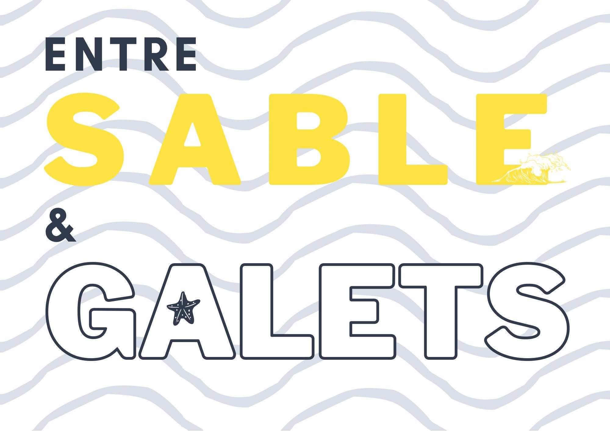

En mars 2027, nous embarquons en famille à bord d'Azurite pour sept mois de navigation jusqu'aux Shetland. Mais ce voyage ne s'arrête pas à nous quatre : nous espérons devenir une plateforme de sciences participatives avec Astrolabe Expeditions, et nous le partagerons avec les enfants scolarisés à L'Aiguillon-la-Presqu'île grâce à un projet pédagogique co-construit et des échanges réguliers avec eux. Notre progression sera aussi suivie en direct sur PolarStep, avec un lien d'accès privilégié offert aux personnes qui participent à notre cagnotte.
On a besoin de vous pour prendre le large.
Il nous reste une pièce essentielle à financer avant le départ, le génois, la voile d'avant d'Azurite. En échange de votre participation, des contreparties : autocollants et carte postale envoyée depuis l'Écosse, ou un sac réalisé par nos soins dans la toile d'anciennes voiles. Dès la première contrepartie (le coup de pouce), vous recevez aussi un lien d'accès privilégié vers notre carnet de bord de navigation.
Participer à la cagnotte